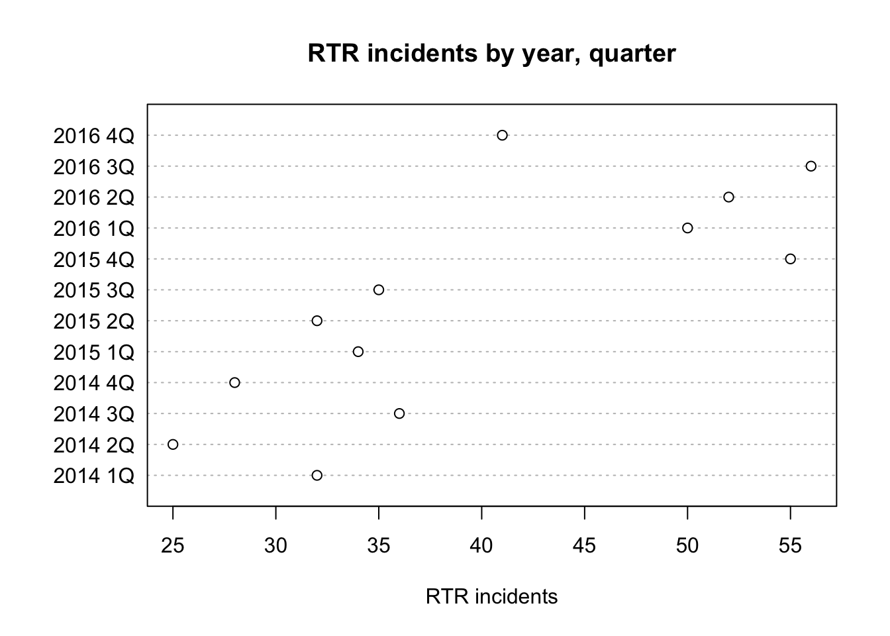
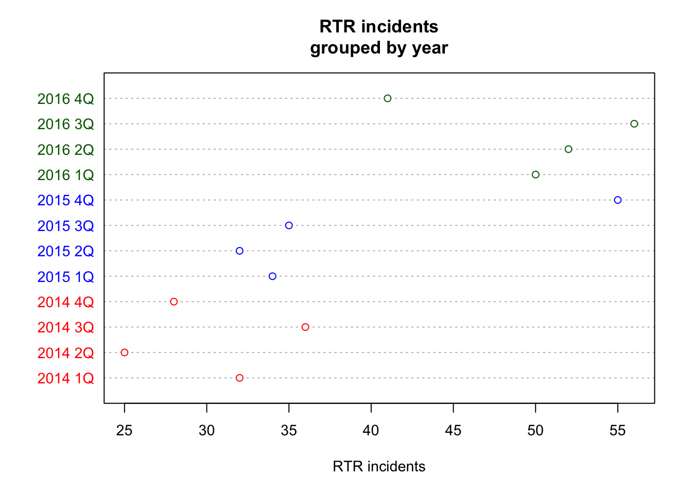

The dot chart is like a bar chart, but with a dot instead of a bar.
First we load the readr library and then the dataset.
library(readr)
df <- read_csv("dfCrime.csv")## Parsed with column specification:
## cols(
## Year_Quarter = col_character(),
## year = col_integer(),
## quarter = col_character(),
## Total_CFS = col_integer(),
## Total_arrests = col_integer(),
## Total_RTR = col_integer(),
## SOF_only = col_integer(),
## UOF_only = col_integer(),
## Transitions = col_integer()
## )Now let’s use summary() to remind us of what the data is
summary(df)## Year_Quarter year quarter Total_CFS
## Length:12 Min. :2014 Length:12 Min. :18178
## Class :character 1st Qu.:2014 Class :character 1st Qu.:19663
## Mode :character Median :2015 Mode :character Median :21544
## Mean :2015 Mean :21341
## 3rd Qu.:2016 3rd Qu.:22753
## Max. :2016 Max. :24715
## Total_arrests Total_RTR SOF_only UOF_only
## Min. : 889.0 Min. :25.00 Min. : 6.00 Min. :15.00
## 1st Qu.: 947.8 1st Qu.:32.00 1st Qu.: 9.75 1st Qu.:16.00
## Median : 994.5 Median :35.50 Median :12.00 Median :19.50
## Mean :1013.2 Mean :39.67 Mean :11.67 Mean :21.92
## 3rd Qu.:1046.2 3rd Qu.:50.50 3rd Qu.:13.25 3rd Qu.:25.75
## Max. :1246.0 Max. :56.00 Max. :19.00 Max. :35.00
## Transitions
## Min. : 2.000
## 1st Qu.: 3.000
## Median : 6.500
## Mean : 6.083
## 3rd Qu.: 8.000
## Max. :12.000Three years with four quarters each of response-to-resistance (RTR) incidents from the Elgin police department. That’s broken down by the type of response - show of force only, use of force only and transition - show to use of force.
Making a dot plot is pretty simple
dotchart(df$Total_RTR,labels=df$Year_Quarter,
main="RTR incidents by year, quarter",
xlab="RTR incidents")
dotchart( is the main command.
df$Total_RTR is the column we want to chart, followed by a comma.
labels = is the column we want to use as labels (comma)
title and main are pretty obvious.
The result uses a dot to represent the number for each value in Total_RTR. Using this we can see that RTR incidents increased dramatically starting in the fourth quarter of 2015.
We’re not able to sort basic plots like this very well, so the order is most recent on top.
But we can add some color based on the year.
df$color[df$year==2014] <- "red" ## Warning: Unknown or uninitialised column: 'color'.df$color[df$year==2015] <- "blue"
df$color[df$year==2016] <- "darkgreen"
dotchart(df$Total_RTR,labels=df$Year_Quarter,cex=.9,
main="RTR incidents\ngrouped by year",
xlab="RTR incidents",
color=df$color) 
df$color[df$year==2014] <- “red” creates a new column df$color, selects the rows where df$year is equal to 2014 [df$year==2014] and assigns the word red to it <- “red”
The first time we do this, it generates a warning that we can ignore - we’re using the column at the same time as creating it, but apparently that’s OK.
We do the same for the other two years in the data set. If you take a look at df now, you’ll see there’s a new column called “color” with the color names in there.
Then we plot the same way as before, with a couple of differences
cex=.9 adjusts the size of the text to be 90% of full size. You can experiment with different sizes, but mainly it’s to make things easier to read on the screen.
color=df$color tells the plot to use the color named in the new column we added. “red,” “blue” and “darkgreen” are all colors that R understands in plain language.
Here’s a complete list of colors R recognizes: http://www.stat.columbia.edu/~tzheng/files/Rcolor.pdf